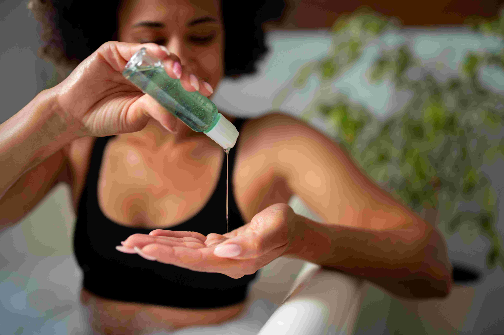
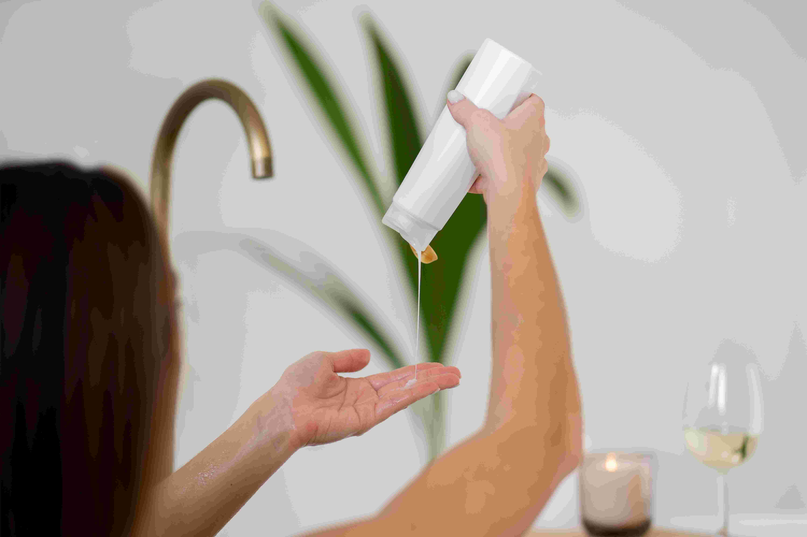
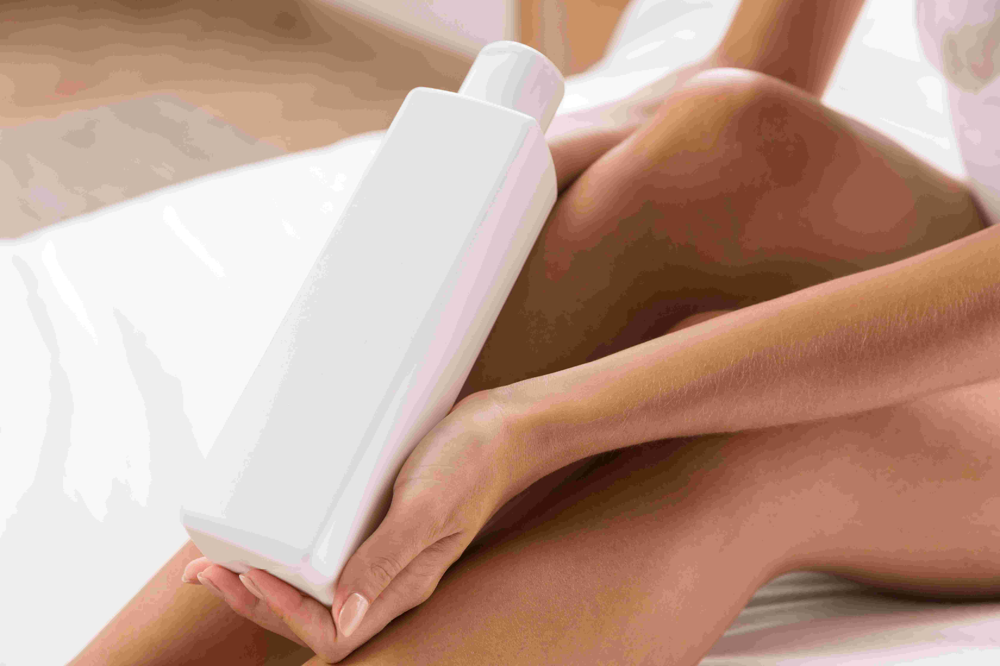

Categoría: Cuidado Corporal

Gel de ducha

Loción reafirmante
Sobre Cuidado Corporal
Nuestro cuerpo también merece atención y mimo. Por eso, en Belleza Pura hemos creado una colección completa de productos
para el cuidado corporal que respetan tu piel y el medio ambiente. Desde aceites nutritivos hasta geles de ducha y lociones reafirmantes,
nuestra gama transforma cada momento en una experiencia de spa.
Cada fórmula combina activos botánicos con texturas envolventes que hidratan, regeneran y aportan firmeza. La aplicación
es un placer para los sentidos, gracias a sus aromas naturales y a su rápida absorción que deja la piel suave y satinada.
Utilizar productos de cuidado corporal ecológicos no solo es una elección saludable, también es una forma de conectar contigo
misma, de reconectar con tu cuerpo y tus necesidades reales. No necesitas más, solo lo esencial.
Haz del cuidado corporal un momento de amor propio. Con Belleza Pura, tu piel te lo agradecerá cada día.